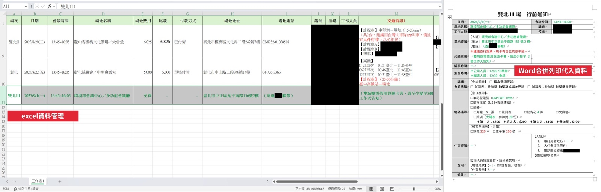
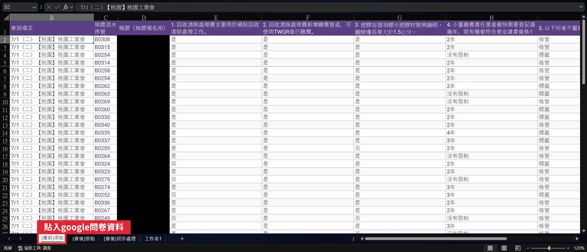
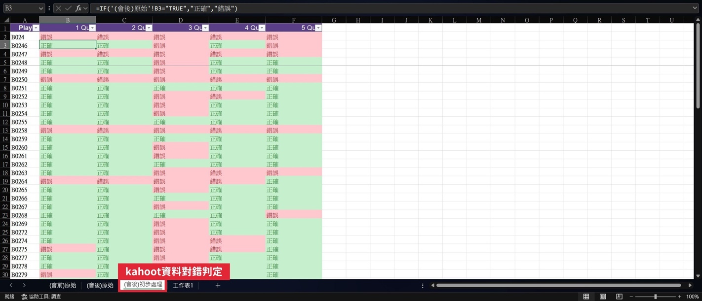

行政工作實績
（一）帳務核銷 ＆ 試算表與資料管理負責年度說明會（10～15 場）經費的預算編列、預支、請款與核銷，涵蓋場地、餐盒、交通、住宿、郵寄等項目，年度總額約 10 萬元、核銷細項約 100 筆。
自行設計雲端試算表記帳範本並附填寫說明，由經手同事於活動期間逐筆登錄金額與憑證轉手人員；年底核銷整理時間由約一個工作天縮短至半天內，憑證遺失時可追溯。範本經會計推薦給其他專案參考。

雲端試算表記帳範本
隨時掌握預算剩餘金額
excel資料庫與 Word 合併列印：具備 Excel 樞紐分析、IF、COUNTIF、XLOOKUP使用經驗；建立郵寄資料主清單搭配 Word 合併列印，批次產出活動場地包裹標籤、獎品寄送與行前通知，整合原本分散重複資料，減少批次處理人為錯誤。
說明會學習成效統計表（四層試算表）：以自編抽獎流水號串接前後測資料，建立「貼入原始資料即自動計算」試算表，訂定資料比對規則；成效結果由年底統整提前至每場結束即可得出，依答錯率調整下一場重點並完成交接。

Word 合併列印行前通知

圖一 問卷原始

圖二 會後資料

圖三 Kahoot判定

圖四 XLOOKUP
四層試算表架構：問卷 ➔ 會後資料 ➔ Kahoot對錯 ➔ 前後測自動串接計算
吳思穎 Alice Wu ｜ 應徵 justfont 行政營運專員
0958-321-139
ichbinalicewu35@gmail.com
字體：justfont 粉圓體 ＆ 源泉圓體
2 / 6